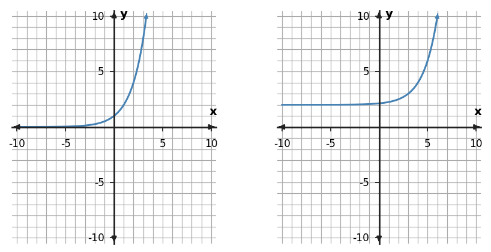

1. Describe the horizontal and vertical translation from $f(x)=|x|$ to $g(x)=|x-2|-3$.
2. Write a transformed rule for $f(x)=3^x$ shifted 4 unit(s) up.
3. For the transformation $g(x)=2f(x-2)$, use parent key points $(-1,1)$, $(0,0)$, and $(1,1)$ to list the transformed points.
4. Compare $g(x)=-2|x-3|-1$ with $f(x)=|x|$. Describe the reflection/stretch/compression and translations.
5. Compare the parent graph on the left with the transformed graph on the right. Describe the transformation using key features, not just overall appearance.

6. A transformation takes $f(x)$ to $g(x)=f(x-2)+3$. State the horizontal and vertical shifts.